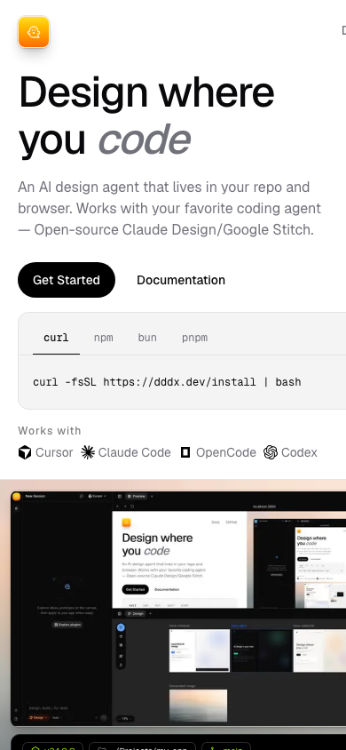

<template id="scene-mobile-template">
  <div data-composition-id="scene-mobile" data-width="1920" data-height="1080">
    <div class="scene-content">
      <div class="bg-glow bg-glow-a"></div>
      <div class="bg-glow bg-glow-b"></div>

      <div class="url-chip">dddx.dev</div>

      <div class="phone-stage">
        <div class="phone-frame">
          <div class="phone-island"></div>
          <div class="phone-viewport">
            <div class="shot-wrap" data-layout-allow-overflow>
              
            </div>
            <div class="tap-target" aria-hidden="true"></div>
            <div class="tap-ripple"></div>
          </div>
        </div>
        <div class="hand-cursor" aria-hidden="true">
          <svg width="42" height="42" viewBox="0 0 42 42" fill="none">
            <path
              d="M12 8C12 5.79086 13.7909 4 16 4C17.5 4 18.78 4.8 19.45 6.02L20 7V4C20 2.34315 21.3431 1 23 1C24.6569 1 26 2.34315 26 4V8.5L27.2 6.8C28.1 5.45 29.85 5.05 31.2 5.95C32.55 6.85 32.95 8.6 32.05 9.95L28.5 15.2V28C28.5 33.2467 24.2467 37.5 19 37.5H14C9.58172 37.5 6 33.9183 6 29.5V16C6 13.7909 7.79086 12 10 12C10.55 12 11.08 12.12 11.55 12.34V10C11.55 7.79086 13.3409 6 15.55 6C16.45 6 17.26 6.34 17.9 6.9V8Z"
              fill="#f5f7fa"
              stroke="#0a0c12"
              stroke-width="1.5"
            />
          </svg>
        </div>
      </div>

      <div class="kicker-wrap">
        <p class="kicker">Get started in one command</p>
      </div>
    </div>

    <style>
      [data-composition-id="scene-mobile"] {
        width: 1920px;
        height: 1080px;
        background-color: #0a0c12;
        position: relative;
        overflow: hidden;
        font-family: "Inter", sans-serif;
        color: #f5f7fa;
      }

      [data-composition-id="scene-mobile"] .scene-content {
        width: 100%;
        height: 100%;
        padding: 72px 120px 96px;
        box-sizing: border-box;
        display: flex;
        flex-direction: column;
        align-items: center;
        justify-content: center;
        gap: 28px;
        position: relative;
      }

      [data-composition-id="scene-mobile"] .bg-glow {
        position: absolute;
        border-radius: 50%;
        pointer-events: none;
        filter: blur(80px);
      }

      [data-composition-id="scene-mobile"] .bg-glow-a {
        width: 480px;
        height: 480px;
        background: rgba(108, 243, 192, 0.11);
        top: 80px;
        left: 220px;
      }

      [data-composition-id="scene-mobile"] .bg-glow-b {
        width: 360px;
        height: 360px;
        background: rgba(108, 243, 192, 0.07);
        bottom: 40px;
        right: 180px;
      }

      [data-composition-id="scene-mobile"] .url-chip {
        position: absolute;
        top: 48px;
        left: 120px;
        font-family: "JetBrains Mono", monospace;
        font-size: 18px;
        color: #6cf3c0;
        background: rgba(22, 25, 34, 0.92);
        border: 1px solid rgba(108, 243, 192, 0.35);
        border-radius: 999px;
        padding: 10px 18px;
        opacity: 0;
        z-index: 4;
      }

      [data-composition-id="scene-mobile"] .phone-stage {
        position: relative;
        perspective: 1400px;
        z-index: 2;
      }

      [data-composition-id="scene-mobile"] .phone-frame {
        width: 320px;
        border-radius: 42px;
        padding: 12px;
        background: #161922;
        border: 1px solid rgba(108, 243, 192, 0.32);
        box-shadow: 0 36px 80px rgba(0, 0, 0, 0.55);
        transform: rotateY(8deg);
        transform-style: preserve-3d;
      }

      [data-composition-id="scene-mobile"] .phone-island {
        width: 96px;
        height: 24px;
        margin: 4px auto 10px;
        border-radius: 999px;
        background: #090b10;
      }

      [data-composition-id="scene-mobile"] .phone-viewport {
        position: relative;
        height: 640px;
        border-radius: 32px;
        overflow: hidden;
        background: #ffffff;
      }

      [data-composition-id="scene-mobile"] .shot-wrap {
        width: 100%;
        height: 100%;
        overflow: hidden;
      }

      [data-composition-id="scene-mobile"] .shot-wrap img {
        width: 100%;
        height: 100%;
        object-fit: cover;
        object-position: top center;
        display: block;
      }

      [data-composition-id="scene-mobile"] .tap-target {
        position: absolute;
        left: 50%;
        top: 58%;
        width: 180px;
        height: 44px;
        transform: translate(-50%, -50%);
        border-radius: 999px;
        border: 1px solid rgba(108, 243, 192, 0.5);
        opacity: 0;
        pointer-events: none;
      }

      [data-composition-id="scene-mobile"] .tap-ripple {
        position: absolute;
        left: 50%;
        top: 58%;
        width: 20px;
        height: 20px;
        margin-left: -10px;
        margin-top: -10px;
        border-radius: 50%;
        border: 2px solid rgba(108, 243, 192, 0.9);
        opacity: 0;
        pointer-events: none;
      }

      [data-composition-id="scene-mobile"] .hand-cursor {
        position: absolute;
        left: calc(50% + 48px);
        top: calc(58% + 36px);
        opacity: 0;
        filter: drop-shadow(0 8px 16px rgba(0, 0, 0, 0.35));
        z-index: 5;
      }

      [data-composition-id="scene-mobile"] .kicker-wrap {
        width: 100%;
        max-width: 980px;
        z-index: 3;
      }

      [data-composition-id="scene-mobile"] .kicker {
        font-family: "Inter", sans-serif;
        font-size: 58px;
        font-weight: 600;
        letter-spacing: -0.03em;
        margin: 0;
        opacity: 0;
      }
    </style>

    <script src="https://cdn.jsdelivr.net/npm/gsap@3.14.2/dist/gsap.min.js"></script>
    <script>
      window.__timelines = window.__timelines || {};
      const BEAT = 5;
      const tl = gsap.timeline({ paused: true });

      tl.fromTo(
        ".phone-frame",
        { y: 56, opacity: 0, rotateY: 18, rotateX: 8 },
        { y: 0, opacity: 1, rotateY: 8, rotateX: 0, duration: 0.8, ease: "power4.out" },
        0.18,
      );

      tl.fromTo(
        ".shot-wrap",
        { scale: 1.06, y: 0 },
        { scale: 1, duration: 0.6, ease: "expo.out" },
        0.3,
      );

      tl.to(".shot-wrap", { y: -20, duration: 1.4, ease: "none" }, 0.95);

      tl.fromTo(
        ".url-chip",
        { y: 12, opacity: 0 },
        { y: 0, opacity: 1, duration: 0.48, ease: "power2.out" },
        0.85,
      );

      tl.fromTo(
        ".bg-glow-a",
        { scale: 0.9 },
        { scale: 1.1, duration: 2.5, ease: "sine.inOut", yoyo: true, repeat: 1 },
        0.1,
      );

      tl.fromTo(
        ".hand-cursor",
        { x: 40, y: 30, opacity: 0, scale: 0.9 },
        { x: 0, y: 0, opacity: 1, scale: 0.88, duration: 0.67, ease: "back.out(1.6)" },
        1.85,
      );

      tl.fromTo(
        ".tap-target",
        { opacity: 0, scale: 0.95 },
        { opacity: 1, scale: 1, duration: 0.25, ease: "power2.out" },
        1.95,
      );

      tl.fromTo(
        ".tap-ripple",
        { opacity: 0.9, scale: 0.4 },
        { opacity: 0, scale: 3.2, duration: 0.8, ease: "power1.out" },
        2.0,
      );

      tl.fromTo(
        ".kicker",
        { x: -24, opacity: 0 },
        { x: 0, opacity: 1, duration: 0.65, ease: "expo.out" },
        0.4,
      );

      window.__timelines["scene-mobile"] = tl;
    </script>
  </div>
</template>
